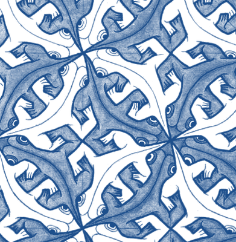

Dereck Piche

Working on the technical alignment problem.
I find ARC’s research agenda promising.
v̄i = ∑j∈ch(i) v̄j ∂vj∂vi

Working on the technical alignment problem.
I find ARC’s research agenda promising.
v̄i = ∑j∈ch(i) v̄j ∂vj∂vi